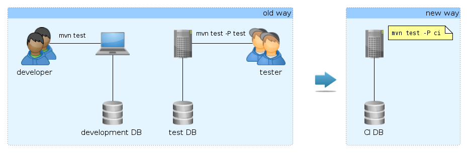
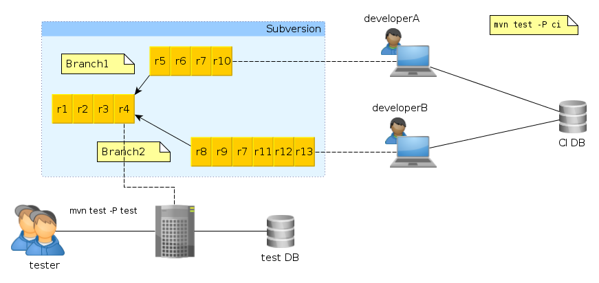
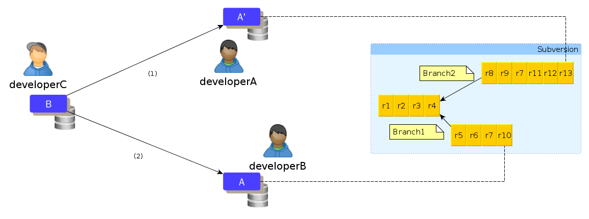
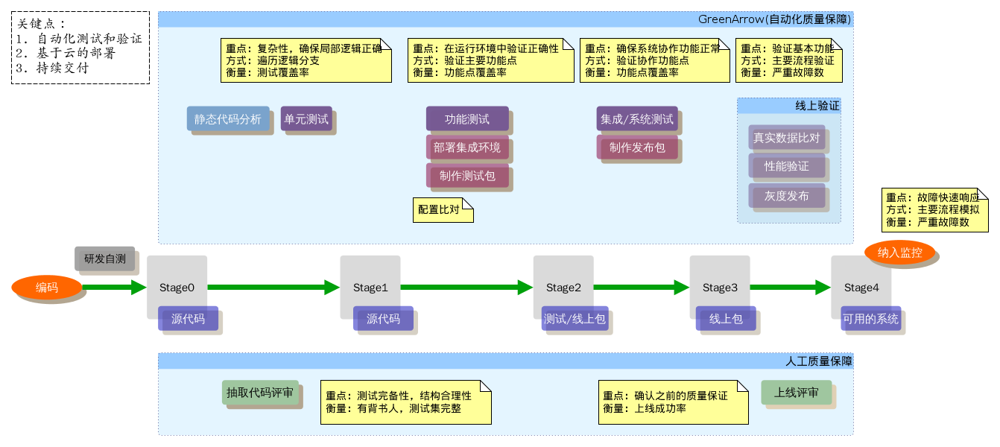
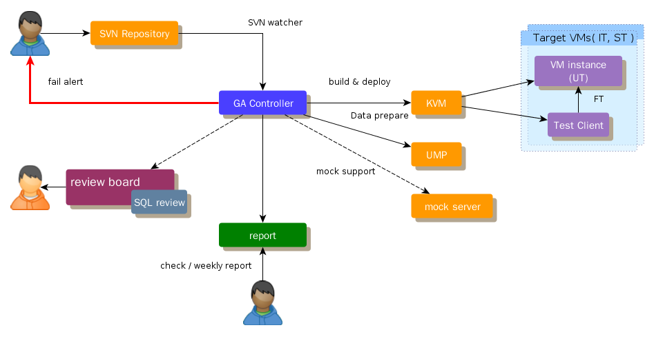
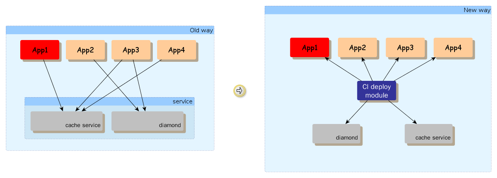
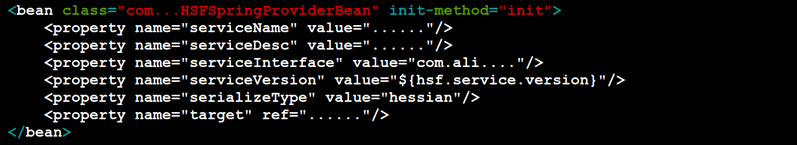
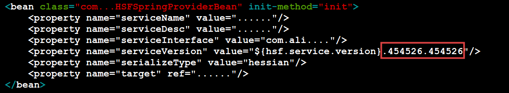
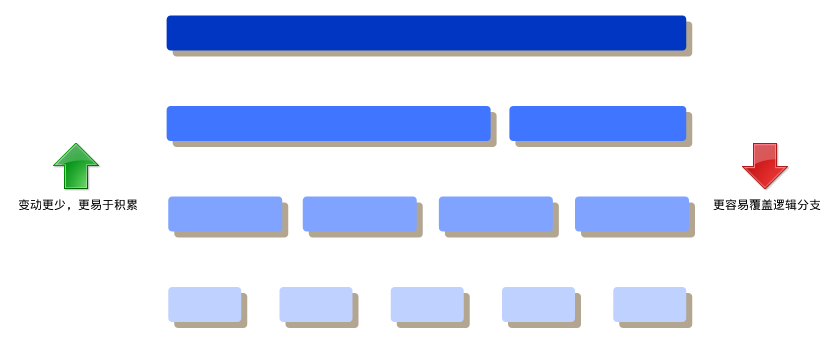

愿景



共用外部资源(数据库)，存在干扰

分支间没有服务隔离(配置环境更复杂了)
L项目，准备联调环境需要近一周
日常项目可能涉及5、6个系统
遗留jar包的陷阱...
独立数据库 + 干净的虚拟机构建
Mock成本
分布式环境，缩短验证和发布周期


# ceres.rb appserver :tomcat source :svn => 'http://svn....com/.../trunk/' use :hsf vm "hsfservice_6.0" use :toast after :mercury
直接数据clone
使用pp脚本，避免过度利用虚拟机镜像

 
传统的分工: DBA, PE, QA

TDD vs. BDD
/
#